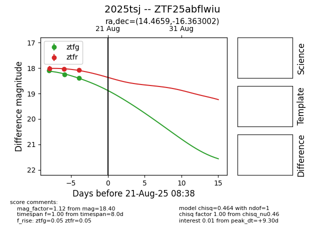

Target 2025tsj at 2025-08-22 16:36, see:
FINK: fink-portal.org/ZTF25abflwiu
Lasair: lasair-ztf.lsst.ac.uk/objects/ZTF25abflwiu
ALeRCE: alerce.online/object/ZTF25abflwiu
TNS: wis-tns.org/object/2025tsj
YSE: ziggy.ucolick.org/yse/transient_detail/2025tsj
alt names
ZTF25abflwiu (ztf,alerce)
2025tsj (tns,yse)
coordinates:
equatorial (ra, dec) = (14.4659,-16.36300)
galactic (l, b) = (131.1341,-79.13228)
photometry
last atlaso=18.23, ztfg=18.40, ztfr=18.08
8 atlaso, 3 ztfg, 3 ztfr detections
